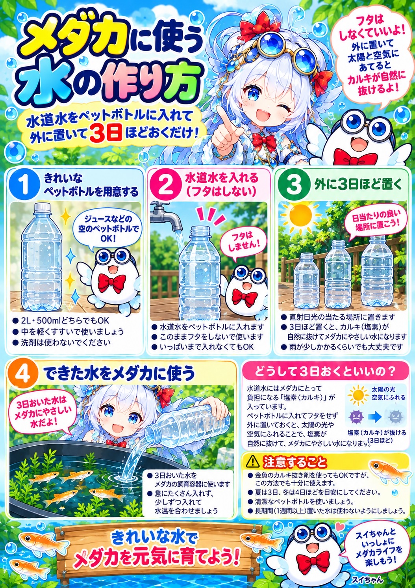
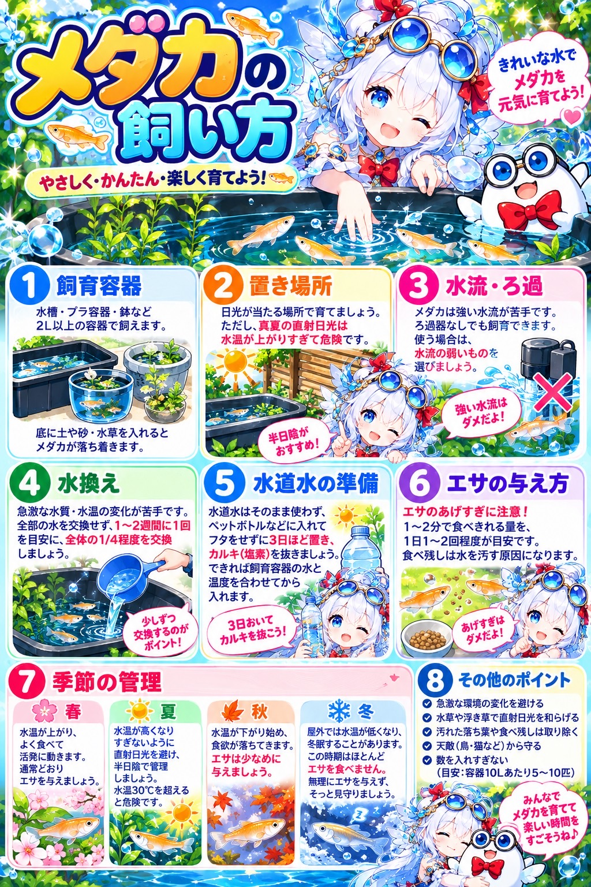

メダカに使う「水の作り方」
水道水をペットボトルに入れて外に置いて3日ほどおくだけ！メダカにやさしい水の作り方を詳しく解説しています。

メダカの「飼い方ガイド」
容器の選び方、置き場所、水換えや季節ごとの管理のポイントなど、やさしく・かんたん・楽しく育てるためのコツが詰まっています。

スイちゃんと一緒に楽しくメダカを育てよう！
水道水をペットボトルに入れて外に置いて3日ほどおくだけ！メダカにやさしい水の作り方を詳しく解説しています。

容器の選び方、置き場所、水換えや季節ごとの管理のポイントなど、やさしく・かんたん・楽しく育てるためのコツが詰まっています。
